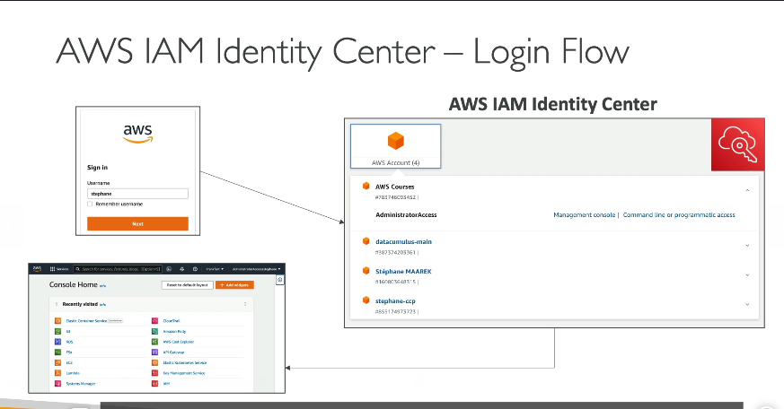
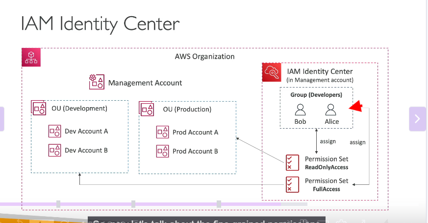
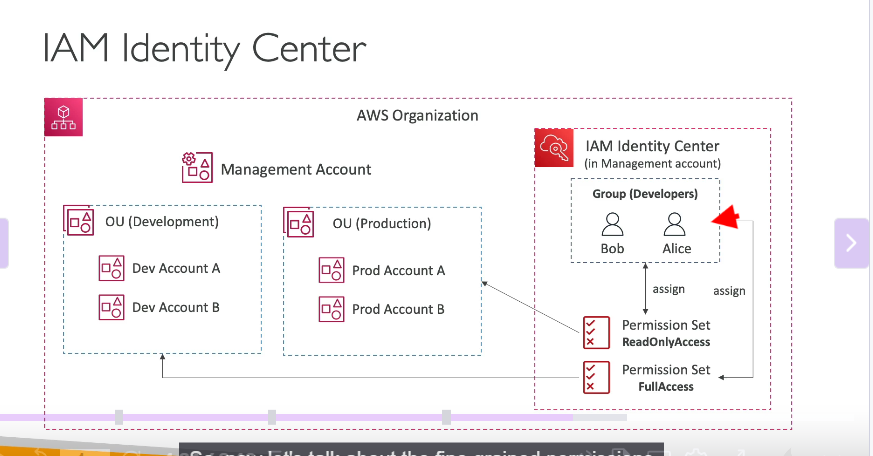
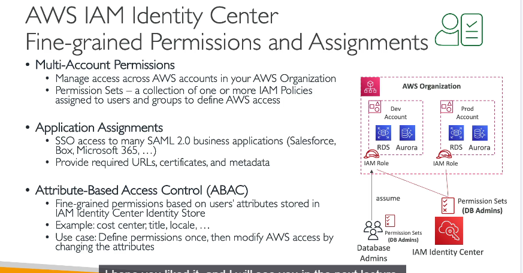

AWS IAM Identity Center
1. Giới thiệu AWS IAM Identity Center
-
Là gì?
-
Dịch vụ kế thừa AWS Single Sign-On (SSO), cung cấp đăng nhập một lần (Single Sign-On) cho:
- Tất cả tài khoản AWS trong AWS Organizations.
- Ứng dụng doanh nghiệp (Salesforce, Microsoft 365, Box...) qua tích hợp SAML 2.0.
- EC2 Windows Instances (qua Active Directory).
- Mục đích: Giảm số lần đăng nhập, quản lý tập trung quyền truy cập.
-
Tính năng nổi bật:
-
Một cổng đăng nhập duy nhất cho nhiều AWS accounts và ứng dụng.
- Hỗ trợ quản lý người dùng qua Built-in Identity Store hoặc kết nối với IdP bên thứ 3 (AD, Okta, OneLogin).
2. Kiến trúc và Luồng đăng nhập

- Bước 1: Người dùng truy cập trang đăng nhập IAM Identity Center.
- Bước 2: Xác thực qua:
- Built-in Identity Store (tích hợp sẵn trong AWS).
- IdP bên ngoài (Active Directory, Okta...).
- Bước 3: Sau đăng nhập, người dùng thấy dashboard liệt kê:
- Tài khoản AWS họ có quyền truy cập.
- Ứng dụng doanh nghiệp được tích hợp.
- EC2 Windows Instances (nếu cấu hình).
- Bước 4: Chọn tài nguyên → Truy cập trực tiếp mà không cần đăng nhập lại.
3. Quản lý quyền với Permission Sets
- Permission Set là tập hợp các IAM policies định nghĩa quyền truy cập cho người dùng/nhóm.
-
Ví dụ:
-
AdminAccess: Full quyền trên tất cả dịch vụ.
- ReadOnlyAccess: Chỉ xem, không chỉnh sửa.
- DatabaseAdmin: Quyền trên RDS/Aurora.
- Cách gán quyền:
 

- Tạo Permission Set (vd:
DevAdmin). - Liên kết Permission Set với OU/Account trong AWS Organizations (vd: Development OU).
- Gán Permission Set cho nhóm/user (vd: Nhóm Developers). → Người dùng trong nhóm sẽ có quyền tương ứng trên tất cả accounts thuộc OU/Account được gán.
-
Cơ chế hoạt động:
-
Khi người dùng truy cập account qua IAM Identity Center, họ assume một IAM role được tạo tự động trong account đó.
- Role này có quyền theo Permission Set đã định nghĩa.
4. Tích hợp với AWS Organizations
-
Cấu trúc ví dụ:
-
Organization Root → Management Account (nơi kích hoạt IAM Identity Center).
- OUs: Development và Production.
- Accounts: Dev-Account1, Dev-Account2, Prod-Account1.
-
Phân quyền đa tầng:
-
Nhóm Developers (Bob và Alice):
- Gán Permission Set AdminAccess cho Development OU.
- Gán Permission Set ReadOnlyAccess cho Production OU. → Bob/Alice có full quyền trên Dev accounts, chỉ đọc trên Prod accounts.
5. Attribute-Based Access Control (ABAC)

- Khái niệm: Phân quyền chi tiết dựa trên thuộc tính của người dùng (vd: department, job title, region).
-
Ví dụ:
-
User có thuộc tính
CostCenter=Finance→ Chỉ truy cập S3 buckets được tagCostCenter=Finance. - User có
Title=Junior→ Giới hạn quyền chỉnh sửa. -
Lợi ích:
-
Giảm số lượng policies: Dùng chung policy, điều chỉnh quyền qua thay đổi thuộc tính.
- Linh hoạt: Dễ mở rộng khi có user/team mới.
6. Kết nối với Ứng dụng doanh nghiệp
- Hỗ trợ SAML 2.0: Tích hợp với bất kỳ ứng dụng nào hỗ trợ SAML (Salesforce, Microsoft 365...).
- Cấu hình:
- Thêm ứng dụng trong IAM Identity Center.
- Cấu hình Metadata/URL từ ứng dụng vào AWS.
- Gán ứng dụng cho user/nhóm. → User thấy ứng dụng trong dashboard sau đăng nhập.
7. Lưu ý cho kỳ thi AWS
-
Câu hỏi phổ biến:
-
Single Sign-On cho nhiều accounts → Đáp án: IAM Identity Center.
- Phân biệt Permission Sets vs IAM Roles: Permission Sets quản lý tập trung, IAM Roles gắn với từng account.
- ABAC áp dụng khi cần phân quyền dựa trên tags/thuộc tính.
-
Dịch vụ liên quan:
-
AWS Organizations: Quản lý multi-account.
- AWS Directory Service: Tích hợp với Active Directory.
8. Best Practices
- Centralized Management: Dùng IAM Identity Center thay vì tạo IAM user/role riêng lẻ.
- Least Privilege: Gán quyền tối thiểu qua Permission Sets.
- Audit: Sử dụng AWS CloudTrail để giám sát hoạt động đăng nhập.
Kết luận: AWS IAM Identity Center là công cụ mạnh để quản lý truy cập tập trung, đặc biệt hiệu quả trong môi trường đa tài khoản và ứng dụng.